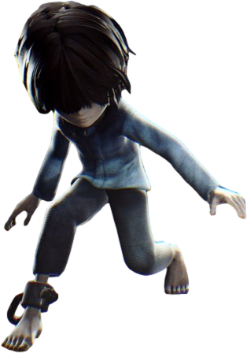

Ezzel a DLC-vel feltárunk pár új régióját a Maw-nak és új titkok napfényre vetése is sorra kerül. Egy új kisgyereket irányítunk, aki úgyanabban az időben járja körbe a Maw-t mint Six, párszor lehet még látni is Six-et ahogy utján van.
Karakterek
Runaway Kid
Runaway Kid a Gondnok egyik alvó egyletében, ahol tartja a gyerekeket, kel fel ahonnan egy kislányt kell követnünk. Egy kis szaladgálás után egy kis csatorna nyílást találunk ahova beugrunk. Ott hamarosan egy zseblámpát találunk amit a játékon keresztül használunk. Ő az egyik legrejtélyesebb karakter a játékban mert nagyon keveset tudunk róla. Mint Six, ő is nagyon elszeretne menekülni a Maw-ról. Lehet látni hogy kedvesebb és hajlandó segítséget elfogadni, nem úgy mint Six.
Granny
Granny az egy vízalatti szörny ami lábadnál fogva húz le a víz alá. A Maw mélyében található ahol a csatorna vizek is folynak át, ezen a helyen
lett ott hagyva és elhanyagolva, ennek oka ismeretlen. Kinézete elundorító, mivel bőra elszottyant, feje kopaszodik és arca egyértelműen
felkavaró. Sokszor agresszív és megpróbálja a játékost lelökni olyan felületekről amik a víz felett lebegnek.
Legyőzése egyszerűnek tűnik, felkapcsoljuk az áramot és egy televíziót ami a víz felett van beledobjuk a vízbe, de Granny ezt nem hagyja.
Megpróbálja letépni és szétszedni azt a fa felületet amin van a televízió és a játékos is, ha nem vagyunk elég gyorsak akkor sikerülni
fog ez neki, habár saját magát is megölve ezzel. De ha sikerül időbe bele lökni a televíziót a vízbe akkor Granny áramütést szendev,
ezzel zárlatot okozva az áramkörben és tovább tudunk menni.
De amikor bekerülünk egy sötét szobába, hirtelen a Gondnok karjait lehet látni ahogy utánunk nyúl és el is kap minket. Miután felkelünk, egy
ketrecben találjuk magunkat ahonnan látjuk Six-et is, de a Gondnok elvisz, és becsomagol minket.
Nome
A zsákból, amibe belettünk csomagolva, kiszabadulunk és találkozunk a Nome-okkal. Az eredeti játékban is találkoztunk már velük de ott
nem volt fontos szerepük, nem úgy mint most. A Nome-ok segítenek Runaway Kid-nek de csak akkor ha megöleli őket, mert alapból félnek tőle,
de megölelni sem olyan könnyű őket néha mert valamikor megpróbálnak elfutni előled.
Ez a fejezet alatt Nome-okat kell összegyűjteni azért hogy szenet dobjanak be a Maw-nak az egyik motorjába, ezzel elmenkülve onnan.
A fejezet végén feltárunk egy titkot, amikor a Nome-ok biztonságba érzik magukat, akkor az árnyékuk megváltozik, egy gyerek forma lesz. Ezzel
a játék elárulja hogy a Nome-ok valamikor gyerekek voltak.
Gondnok
Ugyanabban a fejezetben van mint a Nome-ok. Kétszer számít akadályként nekünk, az egyik ilyen akadály újnak számított a játéknak, egy
korom sötét szobában kell egy biztosítékot megkeresnünk úgy hogy nem keltünk semilyen zajt vagy nem botlunk bele a Gondnokba.
Ezen kívül nem történik semmi vele kapcsolatban, csak egy kisebb akadályként lett bele téve a DLC-be.
Lady
Ahogy elmenekülsz a Maw motor részéből egy lift tetejére esel, a lift belsejében pedig a Lady van. Ennek a fejezetnek a nagy része csak a Lady Szállásában kerül sor de a végén találkozunk a Lady-vel. Miközben haladunk át, rengeteg szét tört tükörrel, egy folyosón meglátjuk a Lady-t. A tükörben nézi magát, a néhány nagyon ritka tükörben ami nincs szét törve a Maw-ban, maszkja nélkül. A játék során ez az első alkalom hogy látjuk az arcát, de nem egy szép látvány. Meglehetőleg a maszkkal akarta eltakarni csúfságát. Észrevesz minket, dühös lesz hogy megláttuk csúfságát és elteleportál. Tovább kell futnunk a folyosókon amikor egy szobába benyitunk, abban a szobában a Lady előjön és látszólag megöl minket, de nem az történt. Egy Nome-ként kelünk fel, a Lady változtatja át a gyerekeket Nome-okká. Ha tovább megyünk akkor egy kis idő alatt egy ismerős szobába kerülünk be. Egy kolbász van a földön ami elé a karakterünk oda megy és furcsán vizsgálgatja.